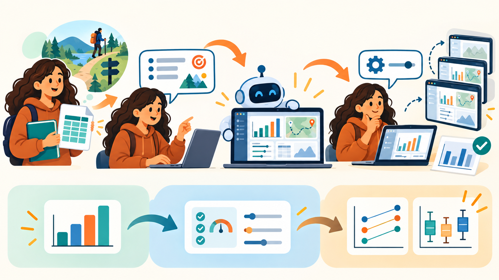
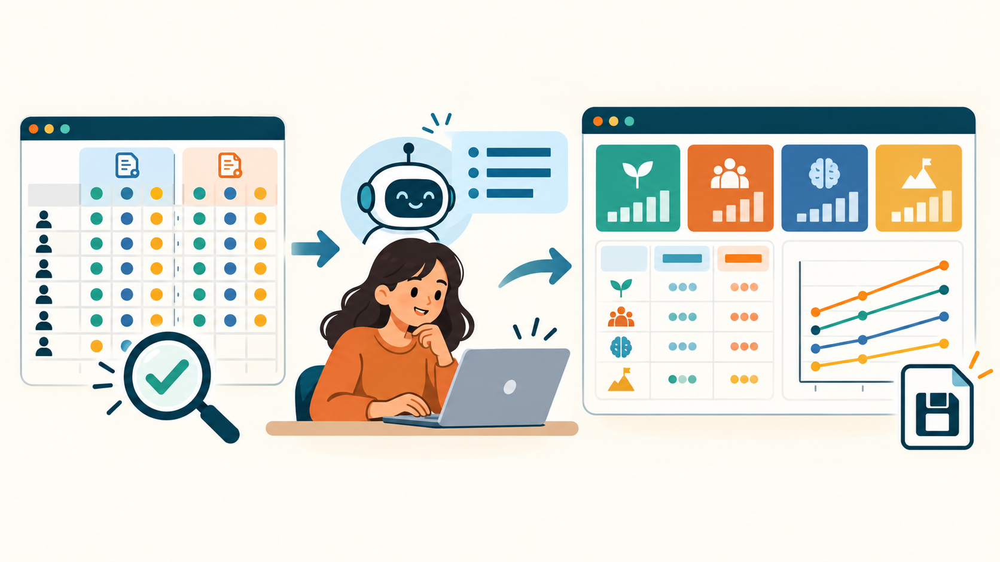
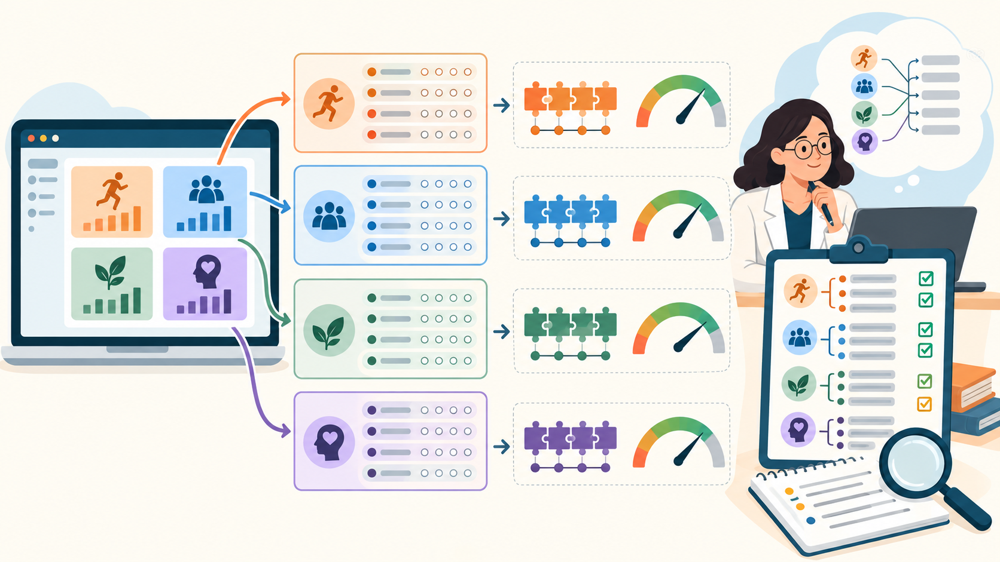
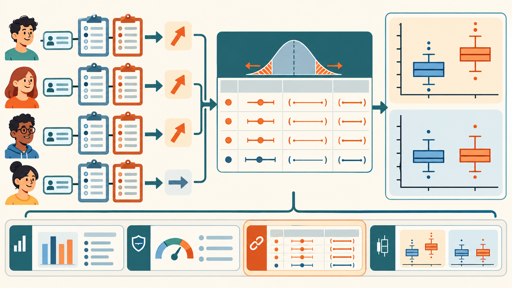

第二次・10/16（星期五）・休閒二年級・統計學（一）
用 AI Agent 逐步打造 SIMS 統計分析工具
從休閒專業需求出發，分三輪提示建立 App；用背景知識說清楚需求，再逐步檢查和擴充成果。
本單元的重點不是教統計公式或程式設計，而是示範：當休閒專業工作需要一個前後測分析工具時，不會寫程式的人也能把需求、資料規則和已知的統計背景說給 AI Agent，請它先做初版，再逐步增加功能。每一輪都要試用成果、用提供的參考值核對結果，確認舊功能還在，再提出下一輪需求。

本單元沿用授課教師指定 SIMS 版本的原題和七點作答尺度，不改題目；學生只需以系上戶外體驗活動為作答對象。SIMS 本來就是測量參與者當下對特定活動的動機，原作者也說明可用於實地或實驗活動，因此不必和原研究辦同一種活動。請勿讓 AI 改寫題目；前後測使用同一版本。這份資料是虛構的，只用於練習統計計算。(SIMS 原始論文)
01Problem Statement 題目敘述
情境與資料
系上辦理戶外體驗活動，需要整理參與者前後測。提供兩種模擬情境：一組 53 位虛構參與者，在部分構面有變化；另一組 52 位虛構參與者，各構面變化很小。每人有相同代碼的前後測資料，沿用 SIMS 16 題、每題 1 至 7 分。這些資料是為了讓學生測試 App 的讀檔、配對和分析功能而刻意生成，不代表真實活動成效。
| 欄位群 | 說明 | 分析用途 |
|---|---|---|
cohort | growth_pattern（部分構面改變）或 stable_pattern（變化很小） | 選擇教學情境 |
participant_id | 虛構參與者代碼，同一情境內前後測相同 | 確認配對，不可跨情境配對 |
intrinsic1_pre…amotivation3_post | 四構面、每構面四題的前後測作答；1 至 7 分 | 計算構面平均與前後差異 |
四個構面為內在動機（intrinsic motivation）、認同調節（identified regulation）、外在調節（external regulation）及無動機（amotivation）。高分只表示該構面題目反應較高；解讀外在調節及無動機時，不要將所有分數都簡化成「越高越好」。
構面對應方式
實際問卷沿用授課教師指定的 SIMS 版本原題；不要把以下白話解釋當成問卷題目，也不要請 AI 改寫原題。資料欄位按原量表的四個構面整理，每構面四題。
- 內在動機：「我覺得活動本身有趣，所以想參加。」
- 認同調節：「我知道這件事對我有價值，所以願意參加。」
- 外在調節：「我受到外在期待、獎勵或壓力影響，所以參加。」
- 無動機：「我不太明白為什麼參加，也不確定這件事有什麼意義。」
這四個分數分別描述不同原因，不是由好到壞的單一排名。例如，活動後認同調節較高，可以解讀為學生更認同活動的價值；不能直接說每位學生都變得更喜歡活動。
02Suggested Prompts 建議 Prompt
以下三輪提示示範如何把專業需求逐步交給 AI Agent。介面排版和配色沒有唯一答案；不同學生的 App 外觀可以不同，但提示明列的功能、資料規則和統計結果必須一致。每一輪都從上一版繼續，要求 Agent 保留已完成的功能。
階段一：讀取資料、整理構面平均並比較前後測

先讓 Agent 檢查 CSV，再建立第一版網頁工具。這一版只做資料檢核、構面平均、摘要表及前後平均折線圖。
請讀取專案中的 sims_prepost_two_scenarios.csv，先檢查欄位、空白值、participant_id、cohort、題目分數範圍及每組人數，再建立單檔 HTML 網頁工具。這是虛構教學資料；保留原始 CSV，不要改寫它。資料約有兩組各五十位參與者、SIMS 16 題的前測與後測，每個構面四題，作答 1 至 7 分。
網頁要能直接用瀏覽器開啟，不需伺服器或外部服務，並可上傳同欄位 CSV。使用者可選擇 growth_pattern 或 stable_pattern 情境。以 participant_id 配對同一人的前後測；若 ID 重複、分數空白、非整數或超出 1 至 7，清楚列出問題，不要靜默當成 0，也不要錯誤配對。
依照 item map 將 16 題分成內在動機、認同調節、外在調節、無動機四個構面，每構面四題，分別計算個人前測及後測構面平均，再計算各構面前測平均、後測平均及差值。呈現各構面摘要表與前後平均折線圖，標示樣本數和 1–7 分範圍。清楚說明平均數只摘要中心位置，不能呈現個人分布，也不能單獨判定活動成效。完成後告訴我如何開啟、上傳資料及核對一位參與者的構面平均。
請將第一版另存為 unit03_app_v1.html，不要覆蓋 CSV。介面外觀可自行安排，不必仿照範例；但資料匯入、欄位檢查、配對規則、構面計分和參考結果必須符合以上規格。第一版完成檢核
- growth_pattern 有 53 位、stable_pattern 有 52 位；總計 105 位模擬參與者。
- 每位參與者 16 題前測及 16 題後測；每一構面四題，分數都介於 1 至 7。
- 抽查一位參與者，請 Agent 說明某構面平均，再與參考值核對；前後測 ID 配對正確。
- 四構面順序、名稱、前後測平均及差值方向清楚；平均折線圖資料點與摘要表一致。
- 第一版已另存為 unit03_app_v1.html。
平均數把一組分數濃縮成一個代表數字，適合快速看整體高低和前後方向，但會藏起個別差異。比如兩組分數平均都可能是 4 分，一組大家大多答 4 分，另一組有人答很低、有人答很高；只看平均看不出這種差別。問卷平均也不能單獨告訴我們題目是否真的在測同一個概念、前後變化是否大於個人自然差異，或分數分布是否偏斜。因此後面再檢查題目表現、量測品質和個人配對差值。
階段二：增加信度檢查及量表限制

在第一版可正確讀檔及計分後，增加每個構面的內部一致性摘要。三題或四題構面的 alpha 不能當成效度證據，這一版要把可做與不可做的推論說清楚。
信度：Cronbach's alpha 看同一構面四題在這批資料中是否大致一致；它不等於效度。
效度：SIMS 原研究已為原版量表提供效度證據。因我們沿用相同題目，只把作答對象換成系上戶外活動，該研究是合理的參考依據；SIMS 原本就是用來問參與者對特定活動的當下動機。
若收集真實資料，可再看四個構面是否如預期、學生如何理解題目，或分數是否與相關問卷／行為呈現理論預期的關係。這些是額外證據，沒有單一「效度分數」。本單元資料是虛構的，只能練習計算，不能證明信效度；約百人的實際樣本也宜視為初步證據，不宣稱完成全面驗證。(SIMS 原始研究)
請在目前可用的第一版上增加測量品質區塊，保留資料匯入、錯誤提示、配對、構面計分、平均摘要表和折線圖，不要移除或改壞原功能。另存為 unit03_app_v2.html，保留 unit03_app_v1.html 不變。
在每個 cohort、前測與後測分開計算四個構面的 Cronbach's alpha，並呈現各題與構面總分的相關作為探索性題目檢查。顯示計算所用的有效樣本數、題數，以及缺漏或無效資料的處理規則。若樣本不足、變異為零或無法計算，顯示原因，不要輸出誤導數字。
加入一段易懂說明：alpha 是樣本內部一致性的摘要，不證明單向度或效度；呈現題目－總分相關及題目是否符合四構面的理論對應，作為探索性題目檢查。將內容效度列為「需由教師／專家審查」的檢核項目，不要由程式宣稱通過。因本教學資料是模擬資料，不能宣稱本次資料提供真實量表效度證據。建構效度通常還需理論、專家審查及適當樣本的因素分析等證據；此樣本規模不適合宣稱完成因素驗證。完成後列出新增功能，並確認第一版所有分析仍可使用。
介面可以和第一版或同學的作品不同，但第一版原有功能與本輪新增的測量摘要、文字說明和數值計算都必須符合規格。第二版完成檢核
- alpha 依 cohort、時間點、構面分開計算，且使用個人題目原始分數。
- 題目－總分相關有清楚標示為探索性檢查；內容效度列為教師／專家審查事項。
- 能說明 alpha 不是效度結論，且模擬題目不能支持正式量表效度宣稱。
- 原有 CSV 上傳、資料檢核、平均表與折線圖仍可用；v1 和 v2 兩個檔案都保留。
階段三：增加配對樣本 t 檢定及盒鬚圖

最後增加推論統計和分布圖。前後測必須由同一 participant_id 配對；同時呈現差異方向、效果大小及不確定性。
先對每位學生算「後測減前測」，再看全班平均差是否明顯偏離 0。表中的平均差是正數，表示平均分數上升；是負數，表示下降。這份練習同時檢查四個構面，所以判斷時看表中的 Holm 校正 p 值，並以 .05 為門檻。
- Holm p < .05：這次資料提供了「平均分數有改變」的統計證據；再看平均差是正是負，說明上升或下降。
- Holm p ≥ .05：資料還不足以確認平均分數有改變。即使前後平均不同，也只能說「觀察到一些差異，但未達統計顯著」，不能說已證明完全沒變。
p 值不是活動有效的機率，也不表示變化有多重要；還要一起看平均差和信賴區間。檢定說明的是這批配對資料的平均變化，不能單獨證明是活動造成。可參考NIST 配對觀察值分析說明。
請在現有第二版上增加四構面的配對樣本 t 檢定與盒鬚圖，保留所有既有功能。另存為 unit03_app_v3.html，不要覆蓋 v1 或 v2。每位參與者先以四題平均形成前測、後測構面分數，再以同一 participant_id 計算差值（後測減前測）。
結果表每構面列出配對 n、前測平均與標準差、後測平均與標準差、平均差、95% 信賴區間、t 值、自由度、雙尾 p 值、配對效果量 Cohen's dz，並提供四個 p 值的 Holm 校正結果。明確說明顯著水準及差值正負方向；遇到無效配對、差值無變異或樣本不足時，顯示不能計算的理由。提供每個構面的前後測盒鬚圖，圖上標出中位數、四分位距、鬚線規則及樣本數；不要把盒鬚圖誤說成平均數圖。
加入解讀提醒：這是刻意生成的教學資料，growth_pattern 只應在指定構面呈現顯著變化，stable_pattern 四構面都應沒有顯著變化；先比較兩組結果是否符合預期，再解讀效應大小與信賴區間。配對 t 檢定結果只描述此模擬樣本的前後差異，不足以證明活動造成變化或推論所有學生。完成後列出新增功能，並逐項確認第一、二版的資料匯入、計分、信度和折線圖仍正常。
不要為了讓結果好看而改動計算規則；介面可以不同，但依同一份資料及以上規格計算時，表格數值和判讀結果應一致。第三版完成檢核
- 同一 ID 的後測減前測作為配對差值；不同 cohort 不混在同一次配對分析。
- growth_pattern 內在動機、認同調節及無動機呈現有差異的教學模式（無動機方向是預期下降）；外在調節預期沒有明顯差異。
- stable_pattern 四構面皆預期沒有統計顯著差異。未顯著不代表兩次完全相同，也不等於證明無效果。
- 配對 t 表列出差值、區間、p 值、效果量與 Holm 校正；盒鬚圖顯示中位數、四分位數、鬚線和樣本數。
- v1、v2、v3 三個檔案都保留；重新上傳兩組資料，確認舊功能沒有遺失。
盒子中間的線是中位數，代表排序後位在中央的分數；盒子上下緣是第 25 與第 75 百分位，盒子包含中間一半的人。盒鬚圖能快速看出分數集中還是分散、前後測分布是否移動、有沒有特別遠的分數。它補足平均數看不到的分布資訊，但不顯示每一位學生如何改變，也不能取代配對 t 檢定；因此要把圖和表一起看。此工具把鬚延伸到 1.5 倍四分位距範圍內的最遠觀察值，超出範圍的點會單獨標出。NIST 盒鬚圖說明
模擬資料刻意安排了不同結果，供練習比較。真實單組前後測研究即使有顯著差異，也須留意成熟、期待、活動以外事件等解釋；統計顯著不等於實務重要。效度需要多種證據，不能僅由這份小型模擬資料或 alpha 判定。
03Expected Outcomes 預期成果
保留三個逐步完成的 App 範例，供學生在每一輪完成後檢核自己的成果。
不同學生的畫面、配色和排版可能不同，這是正常的。要一致的是主體功能、資料處理規則、計算方式和分析結果：使用同一份資料與同一條件時，指定功能都要能操作，數值和判讀應與參考範例相符。每次增加功能後，先確認上一版的功能仍能使用。三個版本都要保留，才能看見 AI Agent 如何依序完成初版、擴充版和完整版。
本單元練習的是如何把專業需求說清楚、提供背景知識、分階段提示 AI Agent、核對輸出並保留每一版成果。統計說明是幫助學生提出需求和檢查 App 的依據，不要求學生自己寫程式或推導統計公式。